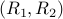

|
Projects - Theory
Information theory and its interplay with control theory and decision theory.
Sequential Information Gain Metric
A metric to sequentially measure information gains when looking at a stream of observations
Mutual information is a well-known metric for measure of information between two correlated sequences.
But it lacks in being used as a cost/utility function in control theory problems - the main reason
being mutual information cannot be expressed in terms of the decision variables if the decision variables
or discrete/gaussian. We propose a more general control-theoretic framework which can capture
information gains in the cost/utility function.
Applications of sequential information gain metric in sensor selection problem is given here.
Inverse Optimal Control for Two-Agent team decision problems.
Understanding the common goal of a team of interacting agents by observing their behavior.
Given the policies of the agents, we provide the structure of the cost function that is being minimized by
these agents, among a general class of cost functions. This is the first Inverse Optimal Control result
in the control literature for more than one agent. We use information-theoretic tools in providing the result.
HMMs and Feedback Communication
An equivalence between stability of Hidden Markov Models and reliability of feedback communication systems.
Providing conditions when a feedback communication scheme is reliable for a given channel is a difficult problem.
We provide an equivalence between reliability in feedback communication systems to stability of the NLF of a Hidden
Markov Model. Further, we provide necessary and sufficient conditions for reliability of feedback communications.
Finally, we use Lyapunov theory to show that a feedback communication scheme can achieve any positive rate () if
it can reliably transmit a finite number of bits.
Shannon Theory
Multi-level Unequal Error Protection.
Fundamental limits and strategies in providing unequal error protection for a bitstream of multiple classes.
Quite often, it is required that a particular part of a bitstream requires more protection than the other parts (Eg: packet headers vs payload data).
For a given data with multiple classes of bits, we provide fundamental limits on how good the multi-level protection can be, and develop strategies to
achieve the same.
Network Coding
Network Coding for Timing Channels
Coding at the nodes when inputs and outputs are timing events.
Timing Channels
When the messages are stored in the packet timings rather than their contents.
Broadcasting Bits Through Queues.
Consider a communication system where the messages are encodedtranmistteddecoded
from event timings. We consider the case where an encoder broadcasts bits through the timings
to multiple users (some are less noisy than the other). The noise is added by a queuing source.
We provide an achievable region  for this broadcast problem with timing ip and op's.
|